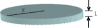

Home Page
F.A.Qs
Statistical Charts
Past Contests
Scheduled Contests
Award Contest
| Online Judge | Problem Set | Authors | Online Contests | User | ||||||
|---|---|---|---|---|---|---|---|---|---|---|
| Web Board Home Page F.A.Qs Statistical Charts | Current Contest Past Contests Scheduled Contests Award Contest | |||||||||
|
Language: Babel Towers
Description Babel Inc. is a company that designs structures for skyscrapers. They have developed a simple technique to estimate the feasibility of a design, based on the fact that their designs are equivalent to stack blocks of circular section and constant height. The height of a block is used as the unit of lineal measure. Blocks are all made of the same non deformable uniform material, so that the weight of a block is proportional to its volume and its center of mass is the geometrical center of the block. A typical block is of the form  which weight is determined by the radius of the circular section (because every one has height 1). For n ≥ 1, an n-tower is a stack of n blocks. Blocks in an n-tower are numbered 0, 1, …, n − 1 , from the bottom to the top. Given an n-tower, its k-subtower is defined as the k-tower with the first k blocks of the n-tower, 0 ≤ k < n . An example of a 5-tower could look like the following figure: A tower is feasible when it can be built putting its blocks one by one from bottom to top. At each building step the corresponding subtower should be stable, i.e., every block of it must remain in the position that it is designed to stay. When placing a block results in a stack of blocks which part of it has a center of mass that lies out of the base on that it is supported we say that the resulting tower collapses and is unfeasible. Babel Inc. does not consider stable a situation where the center of mass of the system of blocks that are supposed to rest on a block lies on the border of the supporting surface. For instance, two blocks of the same dimensions with one of them placed centered on the circumference of the other constitute a 2-tower that collapses; but if the second one is placed within the circle of the first one the system is feasible. Your problem is to help Babel Inc. in the evaluation of tower designs. Given a design for a n-tower you must judge if it is feasible and, if it is not, you must tell at which floor it would collapse. In this last case you give k as answer, with 0 < k < n, if the (k − 1)-subtower is feasible but the k-subtower collapses. Input The input file contains several test cases. Each test case begins with a line indicating N, 0 < N < 1000, the number of blocks that the designed tower should have. Then, there is a line describing each one of the blocks. The block k, 0 ≤ k < N, is described by a line containing 3 integers separated by blanks, of the form xk yk rk which indicates that the block k with radius rk must be placed supported on the block k − 1 (exception: block 0 is placed on the ground) with its center of mass on the point ‹xk, yk, k + 0.5› with respect to a grid with origin in ‹0, 0, 0› , for |xk|, |yk| ≤ 105 and rk ≤ 105. Output Output texts for each input case are presented in the same order that input is read. For each test case the answer must be of the form ‘ Sample Input 3 0 0 10 2 0 12 -4 1 1 4 0 0 12 0 0 10 0 9 10 0 17 5 4 0 0 4 0 1 4 1 0 4 -1 -1 4 2 10 10 5 0 0 3 0 Sample Output Feasible Unfeasible 3 Feasible Unfeasible 1 Source |
[Submit] [Go Back] [Status] [Discuss]
All Rights Reserved 2003-2013 Ying Fuchen,Xu Pengcheng,Xie Di
Any problem, Please Contact Administrator